No. The preview at docs/pl2/Previews/services.html contains five <section> elements:
.hero — out of scope (FU-2 canonical)..engagements — four-card grid..nearshore — cream capacity band..proof — dogfooding pitch + "We Speak" text-only logo strip..closing-cta — espresso final CTA.No heal-flow, healing, or comparable section exists. The string healing appears only inside engagement-card #3 body copy ("Autonomous-healing pilot") and inside nearshore body copy.
Resolution per sprint runbook §"Approval Checkpoints": close FU-6 as "Services does not need heal-flow." Do not open a dedicated heal-flow cycle.
Drag the slider to wipe live (top) over preview (bottom). The diff PNG below each comparator highlights changed pixels in red; the side-by-side composite shows both renders in parallel.
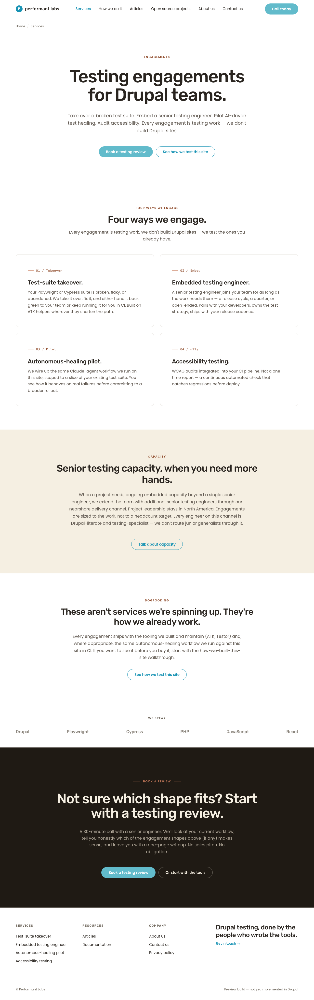
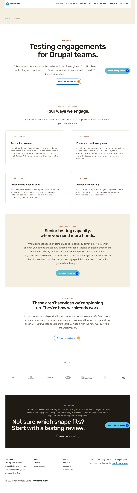
LIVE → ← PREVIEW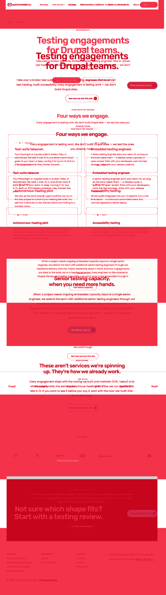
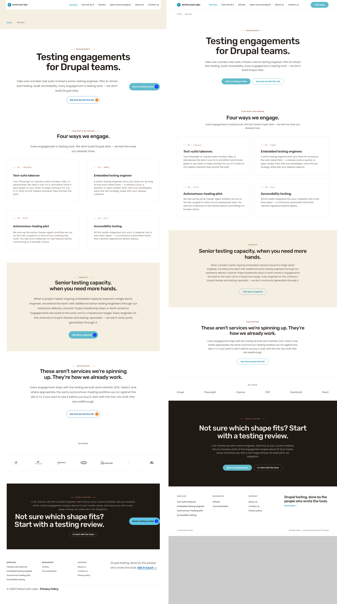
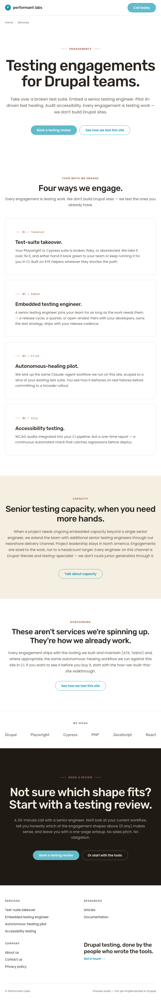
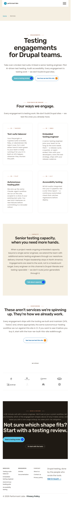
LIVE → ← PREVIEW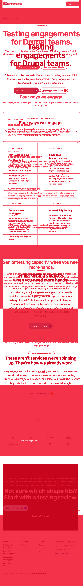
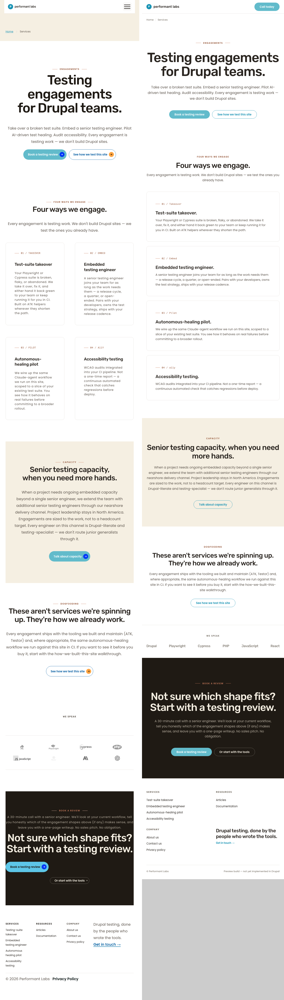
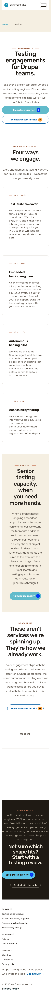
LIVE → ← PREVIEW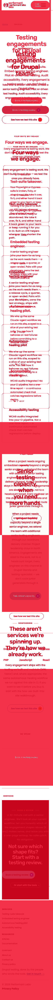
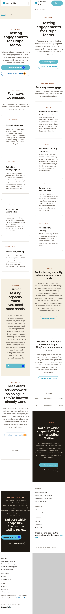
| ID | Delta | Viewports | Category | Layer | Status |
|---|---|---|---|---|---|
| E1 | Card surface: live has top-rule + transparent bg; preview has cream surface w/ inner padding | 1280·768·375 | TOKEN + COMPONENT | L5 (card-canvas) | REWORK |
| E2 | Eyebrow numerals: "01 / TAKEOVER" (live, all-caps) vs "01 / Takeover" (preview, title-case) | all | TYPO + COPY | Canvas content | REWORK |
| E3 | H3 trailing period: preview h3 ends in "."; live has no period | all | COPY | Canvas content | REWORK |
| E4 | Grid columns at 1280 (2×2), 768 (2×2), 375 (1-col) | all | LAYOUT | — | MATCH |
| E5 | Eyebrow underline accent stroke/spacing | 1280 | TOKEN | L5 (card-canvas) | DELTA |
| E6 | Inter-card row gap: ~32 px (live) vs ~48 px (preview) | 1280 | LAYOUT | L5 (card-canvas grid) | REWORK |
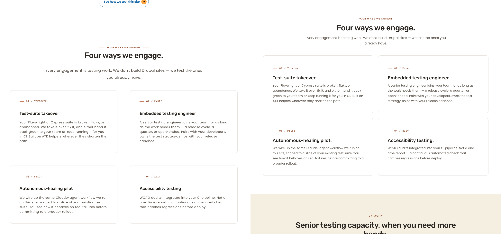
| ID | Delta | Viewports | Category | Layer | Status |
|---|---|---|---|---|---|
| N1 | Section background + kicker treatment | 1280·768 | — | — | MATCH |
| N2 | H2 wrap differs because live uses page container (~1140) vs preview content-cap (~640) | 1280 | LAYOUT | L5 (nearshore CSS) | DELTA |
| N3 | CTA "Talk about capacity" pill | all | — | — | MATCH |
| N4 | Mobile stacking at 375 | 375 | — | — | MATCH |
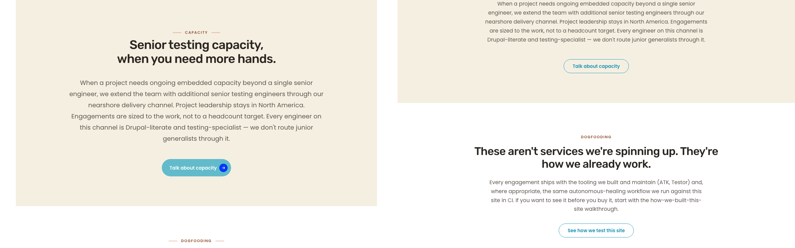
| ID | Delta | Viewports | Category | Layer | Status |
|---|---|---|---|---|---|
| P1 | Logo strip: text-only wordmarks (preview) vs raster logo-grid SDC (live) | all | COMPONENT + TOKEN | Canvas content + L5 | REWORK |
| P2 | "WE SPEAK" label placement — inside hairline strip (preview) vs above raster row (live) | all | LAYOUT | L5 | REWORK |
| P3 | Dogfooding H2 copy | all | — | — | MATCH |
| P4 | Dogfooding body copy | all | — | — | MATCH |
| P5 | Dogfooding CTA "See how we test this site" | all | — | — | MATCH |
| P6 | "DOGFOODING" kicker small-caps | all | — | — | MATCH |
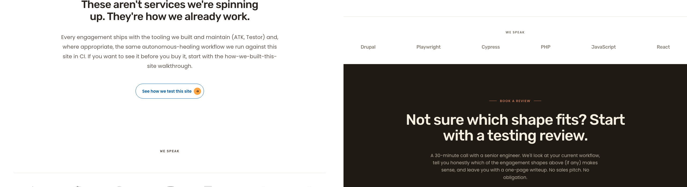
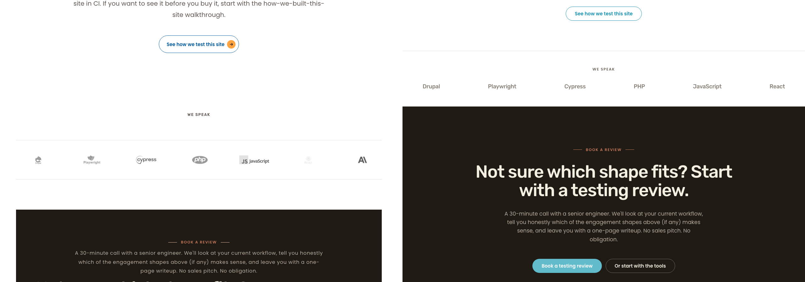
| ID | Delta | Viewports | Category | Layer | Status |
|---|---|---|---|---|---|
| C1 | Element order: kicker→H2→body→buttons (preview) vs kicker→body→H2→buttons-split (live) | 1280 | LAYOUT + COMPONENT | Canvas content + L5 | REWORK |
| C2 | H2 alignment: centered (preview) vs left-aligned with primary button beside it (live) | 1280 | LAYOUT | L5 | REWORK |
| C3 | CTA cluster: side-by-side centered (preview) vs split (live) | 1280 | LAYOUT | L5 | REWORK |
| C4 | Mobile stack (375) | 375 | — | — | MATCH |
| C5 | Espresso bg + terracotta kicker + cream H2 tokens | all | — | — | MATCH |
| C6 | Ghost-on-dark secondary variant | all | — | — | MATCH |
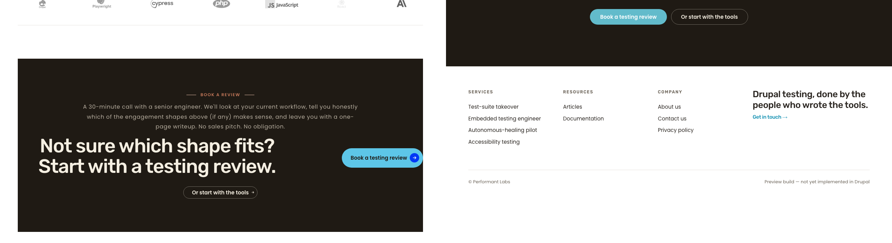
| Cycle | Section | Primary deltas | Layer(s) | F file budget |
|---|---|---|---|---|
| 2 | § engagements | E1 surface, E5 accent, E6 row gap + ride-along E2/E3 | L5 + Canvas content | 3–4 files |
| 3 | § closing-cta | C1 order, C2 alignment, C3 cluster placement | L5 + Canvas content | 3–4 files |
| 4 | § proof / logo strip | P1 text wordmarks, P2 label placement | Canvas content + L5 (potentially L1 if new SDC) | 4–6 files |
| 5 | § nearshore (optional) | N2 content-cap | L5 | 1–2 files |
| Final | Whole page | Cross-section + WCAG verification | T → S | — |
Rationale: Cycle 2 first (largest visible weight, contained to card-canvas). Cycle 3 second (small, layout-only, fast win). Cycle 4 third (most architecturally invasive — component swap). Cycle 5 only if F's scope-cap allows folding it; else close as no-op. FU-6: close as "not needed." Typography canon: not indicated; close as no-op.